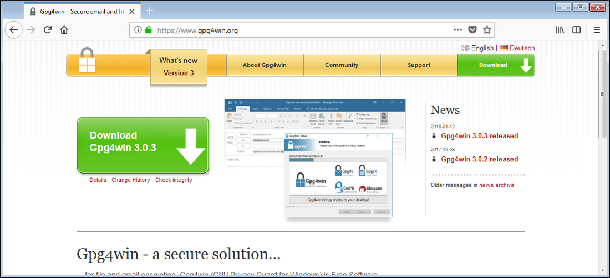
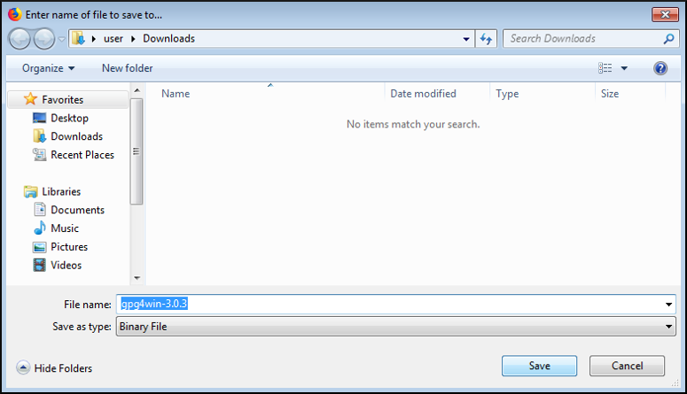
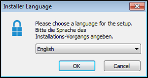
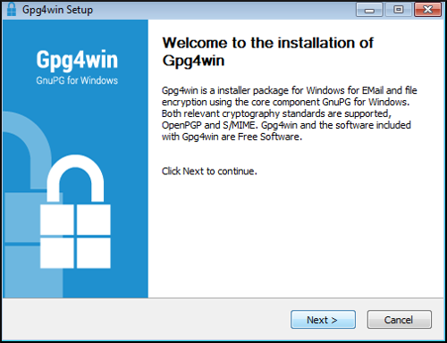
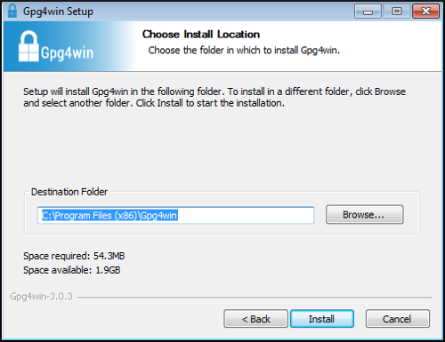
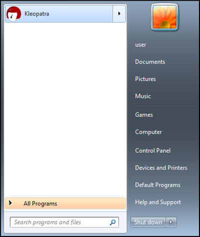
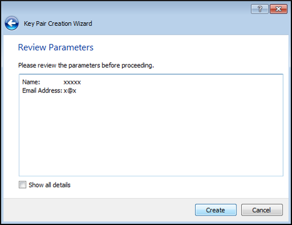
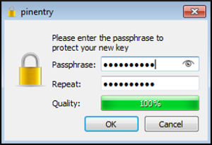

How to verify your Monero CLI/GUI software is safe on Windows (beginner)
Verification of the Monero binary files should be done prior to extracting, installing, or using the Monero software. This is the only way to ensure that you are using the official Monero binary. If you receive a fake binary (eg. phishing, MITM, etc.), following this guide will protect you from being tricked into using it.
To protect the integrity of the binaries the Monero team provides a cryptographically signed list of all the SHA256 hashes. If your downloaded binary has been tampered with it will be produce a different hash than the one in the file.
This is a beginners guide for the Windows operating system and will make use of GUIs almost exclusively. It will walk you through the process of installing the required software, importing the signing key, downloading the necessary files, and finally verifying that your binary is authentic.
Table of Contents
1. Gpg4win Installer
- 1.1. Getting Gpg4win Installer
- 1.2. Use Gpg4win Installer
2. Import Signing Key
- 2.1. Download Signing Key
- 2.2. Initialize Kleopatra
- 2.3. Verify Signing Key
3. Verify Hash File
- 3.1. Download Hash File
- 3.2. Verify Hash File
4. Verify Binary File
- 4.1. Download Binary
- 4.2. Verify Binary
1. Using Gpg4win Installer
This section will cover installing the cryptography software. Windows does not come with the tools required to verify your binary. To install these tools you can use the Gpg4win installer.
1.1. Getting Gpg4win Installer
1.1.1. Download Gpg4win
In a web browser, go to gpg4win.org and download the installer by clicking the green button.

You will be taken to a donation page. If you do not wish to donate select $0, then you will be able to click Download.

Click Save File.

Choose a download location, click Save.

1.1.2. Launch Gpg4win
When the download is finished, open the containing folder.

Double click the downloaded gpg4win executable to launch.

1.2. Use Gpg4win Installer
You will be presented with a security verification screen, click Run.

Select your language, click OK.

A welcome screen will appear, click Next.

Now you will see the component selection screen, you must at least leave Kleopatra checked for this guide. Make your selections, click Next.

It is best to leave the default installation location unless you know what you are doing. Make your selections, click Install.

Installation has completed, click Next.

Click Finish.

2. Monero Signing Key
This section will cover downloading the Monero signing key, verifying that the key is correct, and then importing the key to your keyring. The hash file that will be used to verify your binary is cryptographically signed with the Monero signing key. In order to check the validity of this file you must have the public version of the signing key.
2.1. Download Signing Key
In a web browser, go to binaryFate's GPG key, which he uses for signing the Monero binaries. Right click on the page, choose Save Page As.
Leave the default location, click Save.
2.2. Initialize Kleopatra
If this is your first time using Kleopatra you will have to create a key pair for yourself.
Launch Kleopatra.

2.2.1. Import Signing Key
Click Import.
Enter the directory Downloads, select binaryfate, and click Open.
Start the process of certifying the key by clicking Yes.
2.2.2. Create Key Pair
Start the process of key creation by clicking Yes.

Fill in some details for Name and Email, click Next.

Verify details, click Create.

Set a password, click OK.

Click Finish.

2.3. Verify Signing Key
Visually check that the fingerprint of the key belonging to binaryFate is 81AC591FE9C4B65C5806AFC3F0AF4D462A0BDF92.
If the fingerprint DOES match, click Certify.
If the fingerprint of this key DOES NOT match, DO NOT CONTINUE. Instead delete the file binaryfate from the Downloads directory and go back to section 2.1.
Enter your password, click OK.

Click Finish.
3. Hash File Verification
This section will cover downloading the signed file of known good hashes and verifying its authenticity.
3.1. Download Hash File
In a web browser, go to the getmonero.org hash page. Right click the page, select Save Page As.
Leave the default location, click Save.

3.2. Verify Hash File
In Kleopatra, click the Decrypt/Verify button.
Navigate to Downloads directory. Select hashes file, click Open.
Kleopatra will inform you if the files signature is valid.
If the signature is VALID you will see this:
If the signature is INVALID you will see this:

If you receive a VALID signature, click Discard and move on.
If you receive an INVALID signature, DO NOT CONTINUE. Instead delete the file hashes from the Downloads directory and go back to section 3.1.
4. Binary File Verification
This section will cover downloading the Monero binary and verifying its authenticity.
4.1. Download Binary
In a web browser, go to the getmonero.org downloads page. Select the correct binary for your system.
Leave Save File selected, click OK.
Leave the default location, click Save.

4.2. Verify Binary
In a file manager, navigate to Downloads directory. Open the file hashes with a word processor.
Open a terminal (cmd.exe).

Change to the Downloads directory with the command: cd Downloads.

Calculate the hash of the Monero binary with the command: certUtil -hashfile monero-gui-win-x64-v0.16.0.2.zip SHA256 (if you downloaded a command-line only version, replace monero-gui-win-x64-v0.16.0.2.zip accordingly).
Compare the hash from the terminal with the one in the hash file. They should be the same (spaces can be ignored).
If your hash DOES match then you are finished with verification! You can be sure the Monero files you have are authentic. You may extract and install/use the files normally.
If your hash DOES NOT match DO NOT CONTINUE. Instead delete the Monero binary from the Downloads directory and go back to section 4.1.